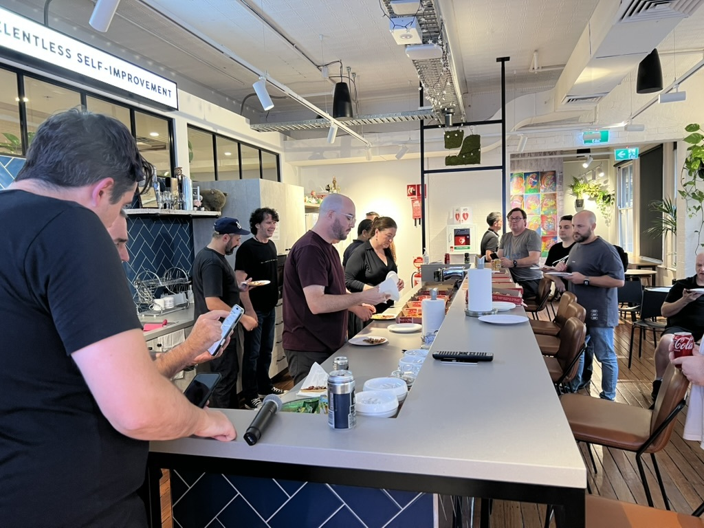

Upcoming Meetup - September 11th 2025

Septembers's meetup will be at Macquarie Banks event space, where we will be having a brief recap on XWorld as well as a international guest presenter.
As usual, spots are limited, so please only register if you intend to make it.
Register
Previous Meetup - July 31st 2025
July's meetup had a great turn out despite the weather. We heard from Cameron on the challenge of managing multi users devices and the features of pitfalls of Apples new migration service.
Previous Meetup - June 26th 2025
June's meetup was our biggest of the year so far and not surprising given the content from WWDC. A big thanks to our friends at Apple for hosting and presenting.
Previous Meetup - May 27th 2025
May's meetup we learned from Patrick about some of the things they built to reduce support tickets and empower end users and from Andy on AI and how its being used within different organisations.
Previous Meetup - March 25th 2025

March's meetup heard about DDM and DDM explorer from Jamf Concepts as a way of understanding more complex aspects like background tasks
Previous Meetup - February 27th 2025
February's meetup was a great success with a great turnout and a good start to 2025. Thanks again to Kandji for hosting and our presenters.